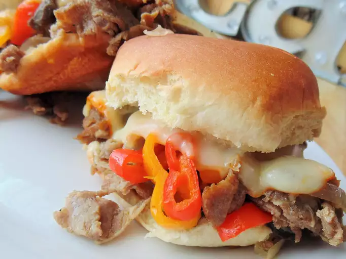

Philly Steak And Cheese Sliders

Philly Steak And Cheese Sliders
A quick and easy take on a Philly steak and cheese sandwich.
Ingredients
- 1 pound sirloin steak, cut into 1/8-inch strips
- 1 pinch meat tenderizer
- 1 splash olive oil
- 1 onion, thinly sliced
- ½ cup minced bell pepper
- 1 teaspoon Italian seasoning, or to taste
- ground black pepper to taste
- 2 cups canned sliced mushrooms
- 1 (12 count) package Hawaiian-style dinner rolls, sliced in half
- 8 slices provolone cheese
Directions
-
Set oven rack about 6 inches from the heat source and preheat the oven's
broiler. Mix steak and meat tenderizer together in a bowl.
-
Heat olive oil in a skillet over medium heat. Add onion and bell pepper;
cook and stir until slightly softened, about 3 minutes. Stir in steak
mixture; cook and stir until flavors combine, about 3 minutes. Mix in
Italian seasoning and pepper; add mushrooms. Cook and stir until steak
is mostly browned, about 3 minutes.
-
Spoon steak mixture onto lower half of dinner rolls until covered; top
with provolone cheese. Place onto a baking sheet.
-
Broil in the preheated oven until cheese is melted, 1 to 3 minutes;
remove from broiler. Place dinner roll tops onto melted provolone
cheese; broil until tops are toasted, 1 to 2 minutes.